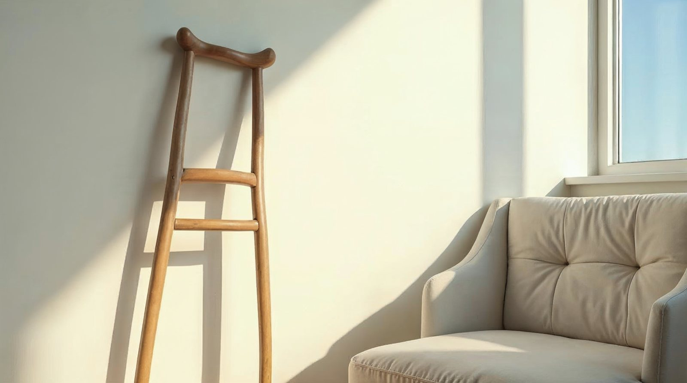
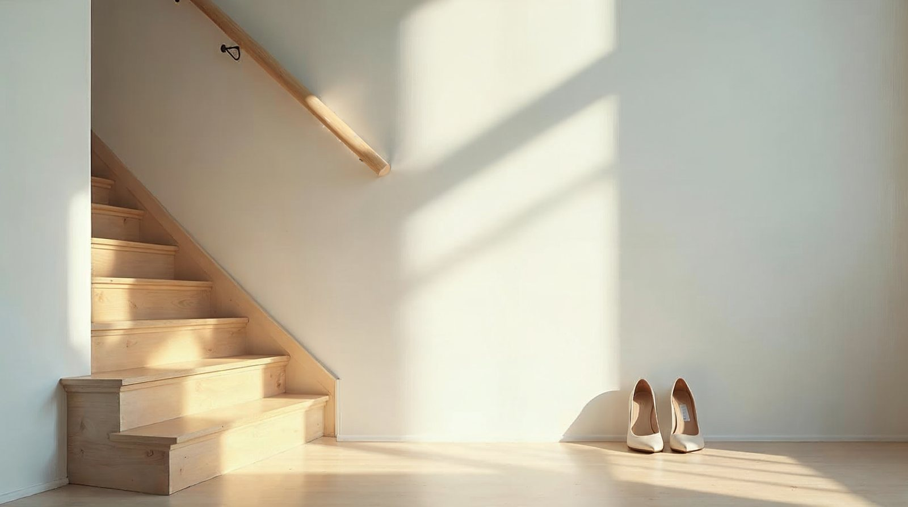
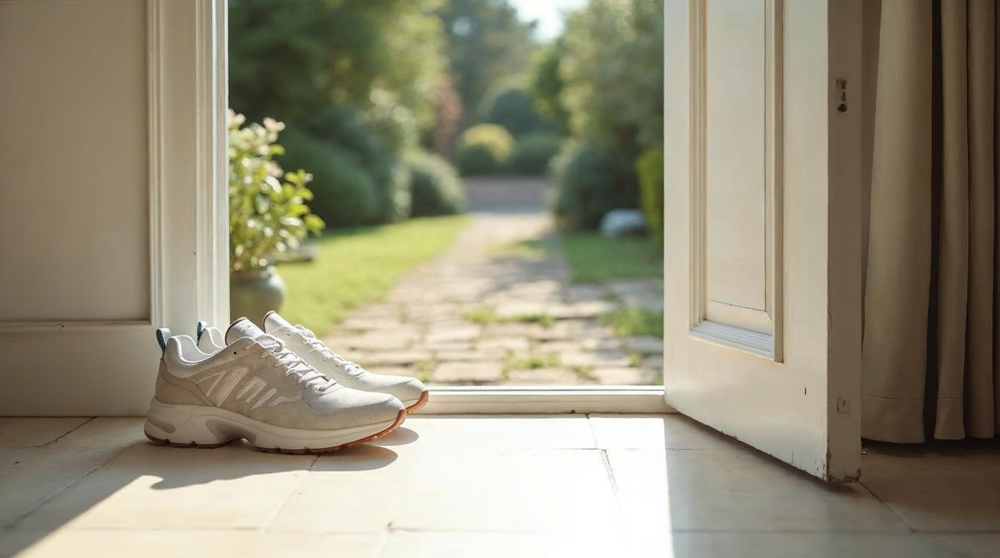
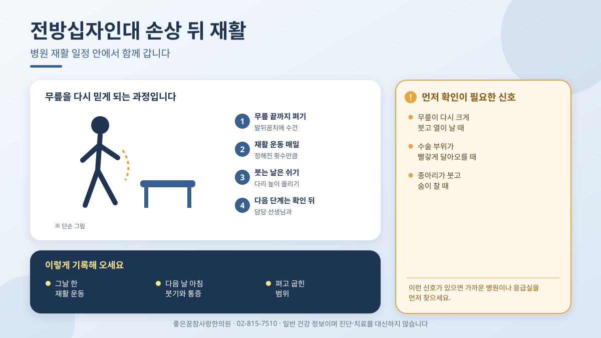

이종호 한의사 감수좋은꿈참사랑한의원 대표원장 (한의사 면허번호 19769)발행 2026-11-26 · 수정 2026-11-27
이 글의 차례
풋살장에서 방향을 휙 바꾸는 순간, 무릎 안에서 뚝 하는 소리가 나고 다리가 풀썩 꺾여요. 몇 시간 지나지 않아 무릎이 풍선처럼 부어오르죠. 병원에서 사진을 찍고 '전방십자인대가 끊어졌다'는 말을 듣는 순간, 머릿속이 하얘지셨을 거예요.
전방십자인대는 무릎 한가운데에서 허벅지뼈와 정강이뼈를 이어 주는 굵은 끈이에요. 정강이뼈가 앞으로 밀려 나가지 않도록 붙잡고, 방향을 틀 때 무릎이 비틀려 빠지지 않도록 지켜 주거든요.
그러니까 사실은 두 가지를 나눠서 보셔야 해요. '인대를 이어 주는 것'과 '무릎이 그 인대를 다시 쓸 줄 알게 되는 것'은 다른 얘기예요. 수술로 인대를 새로 만들어 주더라도, 그 인대가 제 역할을 하도록 무릎 주변 근육과 감각을 다시 길러 내는 건 결국 하루하루의 재활이에요. 수술을 하든 하지 않든 긴 재활의 시간이 이어지는 까닭이에요.
진료실에는 그 긴 시간 동안 무릎 주변이 뻐근하고 붓는 분, 반대쪽 다리와 허리까지 지친 분, 다시 운동해도 될지 불안한 분이 찾아오세요. 다 그럴 만한 일이에요. 한쪽 다리를 아껴 쓰다 보면 나머지 몸이 그 몫을 떠안게 되거든요. 오늘은 재활 기간에 무엇을 살피고 어떻게 지내면 좋을지 말씀드릴게요.

전방십자인대는 어떤 일을 하나요
무릎은 경첩처럼 굽히고 펴는 관절이지만, 걷고 뛰고 방향을 바꿀 때는 조금씩 비틀리기도 합니다. 전방십자인대는 이때 정강이뼈가 앞쪽으로 미끄러지거나 안쪽으로 과하게 돌아가지 않도록 붙잡아 주는 역할을 합니다.
또 인대 안에는 무릎의 위치와 움직임을 뇌에 알려 주는 감각 신호가 지나갑니다. 그래서 인대를 다치면 힘이 빠지는 것뿐 아니라, 무릎이 어디쯤 있는지 느끼는 감각도 함께 흐려져 '무릎을 믿지 못하겠다'는 느낌이 생기곤 합니다.
왜 방향을 틀 때 잘 다칠까요
전방십자인대는 부딪혀서 다치는 경우보다, 혼자 방향을 바꾸거나 점프 뒤 착지하다 다치는 경우가 많다고 알려져 있습니다. 발은 땅에 붙어 있는데 몸이 먼저 돌아가면, 무릎이 안쪽으로 꺾이며 인대에 한꺼번에 큰 힘이 실립니다.
착지할 때 무릎을 거의 펴고 내려앉거나, 무릎이 안쪽으로 모이는 자세도 위험을 키웁니다. 허벅지 뒤 근육과 엉덩이 근육이 약하거나 지쳐 있으면 무릎을 붙잡아 줄 힘이 모자라 인대가 혼자 버텨야 합니다.
그래서 재활은 인대 하나만이 아니라, 무릎을 둘러싼 근육과 착지하는 버릇, 몸통의 균형까지 함께 다시 만드는 과정입니다. 다친 이유를 알면 다시 다치지 않는 길도 함께 보입니다.
수술을 하는 경우와 하지 않는 경우
수술 여부는 나이, 하는 운동의 종류, 무릎이 자꾸 빠지는 느낌이 있는지, 함께 다친 연골이 있는지 등을 보고 정형외과에서 결정합니다. 방향 전환이 많은 운동으로 돌아가려는 분은 수술을 권유받는 경우가 많습니다.
수술을 하지 않기로 한 분도 재활은 필요합니다. 근육으로 무릎을 단단히 붙잡고, 무릎이 빠지는 느낌이 드는 동작을 줄이며 생활하는 법을 익히는 과정이기 때문입니다. 어떤 길이든 결정은 정형외과 선생님과 상의하시면 됩니다.
반월상연골이 함께 찢어졌거나 안쪽 인대를 같이 다친 경우에는 재활 순서와 속도가 달라지기도 합니다. 그래서 진료실에서는 진단서나 사진 소견을 함께 보며 지금 어떤 단계인지 맞춰 봅니다.
재활은 대략 이런 흐름으로 갑니다
처음에는 붓기를 가라앉히고 무릎을 끝까지 펴는 것이 가장 중요합니다. 무릎이 완전히 펴지지 않은 채로 굳으면 걸음이 어색해지고 오래 불편이 남을 수 있습니다. 이 시기에는 허벅지 앞 근육에 힘을 주는 연습도 함께합니다.
다음 단계에서는 굽히는 범위를 늘리고, 목발 없이 바르게 걷는 연습을 합니다. 이어서 한 다리로 서기, 가벼운 근력 운동, 균형 잡기를 차례로 늘리고, 마지막으로 달리기와 방향 전환, 점프 착지를 연습합니다.
이 흐름은 사람마다 속도가 다르고, 수술 방법에 따라 병원마다 주의사항도 조금씩 다릅니다. 그래서 단계를 건너뛰지 않고, 담당 재활 선생님이 정한 기준을 통과한 뒤 다음으로 넘어가는 것이 원칙입니다.
다시 다치지 않으려면 무엇을 연습하나요
재활 후반, 담당 선생님이 허락한 단계에서 가장 공을 들이는 것은 착지와 방향 전환입니다. 점프 뒤 내려앉을 때 무릎을 살짝 굽혀 충격을 받고, 무릎이 엄지발가락 방향을 따라가도록 하는 연습을 거울 앞에서 반복합니다.
한 다리로 서서 균형을 잡는 연습도 중요합니다. 처음에는 단단한 바닥에서 눈을 뜨고, 익숙해지면 쿠션 위에서, 그다음에는 공을 주고받으며 서는 식으로 어렵게 만들어 갑니다. 무릎의 위치 감각이 이 과정에서 다시 살아납니다.
엉덩이 바깥쪽과 허벅지 뒤 근육은 무릎이 안쪽으로 꺾이지 않도록 붙잡아 주는 근육입니다. 다친 쪽뿐 아니라 반대쪽도 함께 길러야 하는데, 반대쪽 무릎을 다치는 경우도 적지 않다고 알려져 있기 때문입니다.
운동으로 돌아간 뒤에도 준비 운동을 대충 넘기지 않는 것이 좋습니다. 경기 전 10~15분 동안 가볍게 뛰고, 옆으로 뛰고, 가볍게 착지하는 동작을 해 두면 무릎을 붙잡는 근육이 미리 깨어납니다.
붓기와 통증은 어떻게 다루면 좋을까요
운동 뒤 무릎이 붓고 열감이 돈다면, 수건에 싼 찬 팩을 10~15분 대고 다리를 심장보다 조금 높이 올려 쉬어 보세요. 붓기가 다음 날 아침까지 크게 남지 않는다면 무릎이 그 양을 감당하고 있다는 뜻으로 볼 수 있습니다.
통증은 0~10 가운데 운동 중 3 안쪽, 다음 날 아침에는 평소 수준으로 돌아오는 정도를 하나의 기준으로 삼는 분이 많습니다. 다만 이 기준도 병원 재활 선생님과 맞추어 정하시는 것이 가장 좋습니다.
진통제를 드시면서 운동하면 무릎이 보내는 신호를 놓치기 쉽습니다. 처방받은 진통제는 지시대로 드시되, 진통제를 먹은 날에는 평소보다 운동 양을 늘리지 않는 쪽을 권합니다.

출근, 계단, 운전은 언제부터 괜찮을까요
일상 복귀의 시기는 수술 방법과 다친 다리가 오른쪽인지 왼쪽인지, 하는 일이 앉아서 하는 일인지 서서 하는 일인지에 따라 많이 달라집니다. 운전처럼 갑자기 브레이크를 밟아야 하는 일은 특히 담당 선생님 확인 뒤 시작하세요.
계단은 처음에는 '올라갈 때는 다치지 않은 다리부터, 내려갈 때는 다친 다리부터' 한 칸씩 디디는 방법이 안전합니다. 난간을 잡고 천천히 오르내리다가, 무릎 힘이 붙으면 번갈아 디디는 걸음으로 넘어갑니다.
오래 앉아 일하는 분은 한 시간에 한 번 일어나 무릎을 펴고 몇 걸음 걸어 주세요. 같은 자세로 오래 있으면 무릎이 뻣뻣해지고 붓기가 아래로 몰리기 쉽습니다. 책상 밑에 발을 올릴 낮은 받침을 두는 것도 도움이 됩니다.
재활 기간에 흔히 겪는 불편
재활 중에는 무릎 앞쪽이 시큰하거나 무릎뼈 아래가 뻐근한 분이 많습니다. 운동량이 늘어나는 날 저녁에는 무릎이 다시 붓고 열감이 돌기도 합니다. 이런 날은 운동 양이 무릎이 감당할 수 있는 선을 살짝 넘었다는 신호일 수 있습니다.
다친 다리를 아끼다 보니 반대쪽 다리와 허리, 골반이 함께 지치는 경우도 흔합니다. 목발을 짚는 동안 어깨와 손목이 아프다는 분도 계십니다. 무릎 하나를 다쳤지만 몸 전체가 그 시간을 함께 견디는 셈입니다.
마음의 지침도 큽니다. 좋아하던 운동을 쉬어야 하고, 예전처럼 뛸 수 있을지 불안하고, 같은 동작을 매일 반복하다 보면 지치기 마련입니다. 잠이 얕아지고 입맛이 떨어졌다는 분도 적지 않아, 이런 이야기도 함께 여쭙니다.
먼저 이렇게 여쭙니다
처음 오시면 저는 대략 이런 순서로 여쭙니다. 미리 정리해 오시면 진료가 훨씬 수월해집니다.
- 다친 시기와 다친 상황, 수술 여부와 수술 날짜 전후의 경과는 어떠셨나요?
- 지금 병원 재활은 어느 단계이고, 하지 말라고 들은 동작이 있나요?
- 무릎을 끝까지 펴고 굽힐 수 있나요?
- 운동한 날 저녁에 무릎이 붓거나 열감이 도나요?
- 반대쪽 다리, 허리, 어깨처럼 함께 불편한 곳이 있나요?
- 잠과 입맛, 기분은 다친 뒤로 어떻게 달라졌나요?
수술 기록이나 재활 운동표가 있다면 사진으로 찍어 오셔도 충분합니다. 지금 단계와 병원의 주의사항을 알아야 한의원에서도 같은 방향으로 도와드릴 수 있습니다.
일상에서 먼저 해 볼 수 있는 것
재활의 중심은 병원에서 받은 운동을 집에서 꾸준히 이어 가는 것입니다. 그 위에 생활에서 무릎을 돕는 작은 습관을 더하시면 좋습니다.
- 병원에서 받은 재활 운동을 정해진 횟수만큼 매일 하기
- 운동 뒤 무릎이 붓는 날은 다리를 심장보다 조금 높이 올리고 쉬기
- 무릎 아래에 베개를 받친 채 오래 두지 않기(무릎이 굽은 채 굳지 않도록)
- 단백질 반찬을 끼니마다 한 가지씩 챙기기
- 잠드는 시각을 일정하게 맞추기
- 다음 단계 운동은 담당 선생님 확인 뒤 시작하기
특히 무릎 아래 베개는 편해서 자꾸 받치게 되지만, 오래 두면 무릎이 끝까지 펴지지 않는 쪽으로 굳기 쉽습니다. 병원에서 따로 정한 자세가 없다면, 쉴 때 발뒤꿈치 아래에 수건을 말아 받쳐 무릎이 자연스럽게 펴지도록 두는 시간을 만들어 보세요.
근육은 운동하는 동안이 아니라 쉬고 먹고 자는 동안 만들어집니다. 재활 운동을 열심히 하시는 분일수록 식사와 잠을 소홀히 하지 않는 것이 회복 속도를 지키는 길입니다.
한의원에서 함께 살필 수 있는 경우
- 재활 운동 뒤 무릎 주변이 자주 붓고 뻐근해 운동을 이어 가기 힘든 경우
- 다친 다리를 아끼느라 반대쪽 다리, 허리, 골반이 함께 지친 경우
- 허벅지와 종아리 근육이 굳어 무릎을 펴고 굽히는 것이 뻑뻑한 경우
- 목발 사용으로 어깨, 손목이 불편해진 경우
- 오랜 재활로 잠이 얕아지고 입맛과 기운이 떨어진 경우
좋은꿈참사랑한의원에서는 모든 분의 맥을 먼저 짚으며 재활 단계와 불편한 동작을 여쭙습니다. 그다음 무릎의 붓기와 움직임 범위, 주변 근육의 긴장, 걸음과 골반의 균형을 차례로 봅니다.
진찰한 내용을 바탕으로 무릎 주변과 함께 지친 부위의 긴장을 줄이는 침, 온열 관리, 골반과 허리의 균형을 살피는 추나 가운데 지금 단계에 맞는 것을 고릅니다. 수술한 부위 가까이는 병원의 주의사항을 먼저 확인하고 조심스럽게 다룹니다. 수술로 몸에 금속 고정물이 있다면 온열 장비를 쓰기 전에 미리 말씀해 주세요.
기운과 잠이 함께 떨어진 분은 한약 상담을 드리기도 합니다. 이때는 드시는 진통제나 다른 약을 먼저 확인하고 신중히 정하며, 병원에서 처방받은 약은 임의로 멈추지 않도록 안내합니다. 한의원 진료는 병원 재활을 대신하지 않고 나란히 갑니다.
이렇게 기록해 오시면 상담이 쉬워집니다
재활은 길고, 날마다 조금씩 달라집니다. 간단한 기록이 있으면 무릎이 어떤 양까지 감당하는지 보이기 시작합니다.
- 그날 한 재활 운동과 횟수
- 운동 뒤와 다음 날 아침 무릎의 붓기와 통증(0~10)
- 무릎을 펴고 굽힌 범위(병원에서 잰 숫자가 있으면 함께)
- 잠든 시각과 깬 횟수
- 무릎이 빠질 것 같은 느낌이 든 동작
기록을 함께 보면 '이 정도 양이면 다음 날 괜찮다'는 선이 보입니다. 그 선을 조금씩 넓혀 가는 것이 재활의 실제 모습입니다.

긴 재활을 지나가는 분들께
전방십자인대 재활은 빨리 끝내는 경주가 아니라, 무릎을 다시 믿게 되는 과정이에요. 어제보다 조금 더 펴지고, 조금 덜 붓고, 조금 더 오래 서 있는 날들이 모여 다시 뛰는 날을 향해 가는 거예요.
재활이 길어지면 '남들보다 늦는 것 같다'는 조급함이 찾아와요. 원래 그래요. 그런데 무릎은 각자의 속도로 회복해요. 다른 사람의 일정표보다 내 무릎이 보내는 붓기와 통증 신호를 기준으로 삼아 주세요. 세게, 빨리보다는 약하게, 오래, 매일이 무릎에는 더 잘 맞는 경우가 많거든요.
한 달 전 기록과 오늘을 나란히 놓고 보면, 매일은 몰랐던 변화가 눈에 들어와요. 펴지는 각도, 걷는 거리, 계단을 오르는 걸음에서 조금씩 달라진 점을 발견하기도 하고요. 그 변화가 다음 한 달을 버티는 힘이 돼요.
무릎 주변의 뻐근함과 지친 몸을 살피는 건 제가 맡을게요. 대신 하나만 부탁드려요. 병원에서 받은 재활 운동, 그것만 빠짐없이 해 주세요. 딴 건 편하게 하셔도 돼요. 다음에 오시면 일주일 기록을 같이 보며 무릎이 어떻게 지냈는지부터 얘기 나눌게요.
이런 증상은 먼저 확인이 필요합니다
- 무릎이 갑자기 크게 붓거나, 열이 나거나, 수술 부위가 빨갛게 달아오르는 경우
- 한쪽 종아리가 붓거나 단단하게 아픈 경우, 갑자기 숨이 차거나 가슴이 아픈 경우
이런 신호가 있으면 한의원보다 가까운 병원이나 응급실을 먼저 찾으세요.
함께 읽으면 좋은 글
- 무릎 반월상연골이 찢어졌다는 말을 들은 뒤에는 무엇을 살피고 어떻게 지내나요?
- 무릎 앞쪽, 무릎뼈 주변이 시큰한 슬개대퇴통증은 어떻게 살피나요?
- 무릎에 물이 찼을 때 초음파로는 무엇을 확인할 수 있나요?
- 체력시험 준비로 갑자기 운동량을 늘린 뒤 무릎과 종아리가 아플 때는?
- 무릎뼈 아래가 아파 점프나 쪼그려 앉기가 불편할 때는 어떻게 살피나요?

여쭙는 것
- 다친 시기와 다친 상황, 수술 여부와 수술 날짜 전후의 경과는 어떠셨나요?
- 지금 병원 재활은 어느 단계이고, 하지 말라고 들은 동작이 있나요?
- 무릎을 끝까지 펴고 굽힐 수 있나요?
생활에서 해 볼 것
- 병원에서 받은 재활 운동을 정해진 횟수만큼 매일 하기
- 운동 뒤 무릎이 붓는 날은 다리를 심장보다 조금 높이 올리고 쉬기
- 무릎 아래에 베개를 받친 채 오래 두지 않기(무릎이 굽은 채 굳지 않도록)
한의원에서 함께 살필 것
- 재활 운동 뒤 무릎 주변이 자주 붓고 뻐근해 운동을 이어 가기 힘든 경우
- 다친 다리를 아끼느라 반대쪽 다리, 허리, 골반이 함께 지친 경우
- 허벅지와 종아리 근육이 굳어 무릎을 펴고 굽히는 것이 뻑뻑한 경우
먼저 확인이 필요한 신호
- 무릎이 갑자기 크게 붓거나, 열이 나거나, 수술 부위가 빨갛게 달아오르는 경우
- 한쪽 종아리가 붓거나 단단하게 아픈 경우, 갑자기 숨이 차거나 가슴이 아픈 경우
한눈에 보는 표
| 구분 | 핵심 |
|---|---|
| 여쭙는 것 | 다친 시기와 다친 상황, 수술 여부와 수술 날짜 전후의 경과는 어떠셨나요? 지금 병원 재활은 어느 단계이고, 하지 말라고 들은 동작이 있나요? |
| 생활에서 해 볼 것 | 병원에서 받은 재활 운동을 정해진 횟수만큼 매일 하기 운동 뒤 무릎이 붓는 날은 다리를 심장보다 조금 높이 올리고 쉬기 |
| 한의원에서 함께 살필 것 | 재활 운동 뒤 무릎 주변이 자주 붓고 뻐근해 운동을 이어 가기 힘든 경우 다친 다리를 아끼느라 반대쪽 다리, 허리, 골반이 함께 지친 경우 |
| 먼저 확인이 필요한 신호 | 무릎이 갑자기 크게 붓거나, 열이 나거나, 수술 부위가 빨갛게 달아오르는 경우 한쪽 종아리가 붓거나 단단하게 아픈 경우, 갑자기 숨이 차거나 가슴이 아픈 경우 |
자주 묻는 질문
수술한 무릎에도 침 치료를 받을 수 있나요?
수술 부위와 상처 상태, 병원의 주의사항을 먼저 확인한 뒤 정합니다. 상처 가까이는 조심스럽게 다루고, 함께 지친 허벅지나 허리, 반대쪽 다리를 살피는 경우가 많습니다.
병원 재활을 받고 있는데 한의원 진료를 같이 받아도 되나요?
병원 재활 일정은 그대로 이어 가시고, 한의원 진료는 그와 나란히 갑니다. 재활 운동표와 주의사항을 가져와 주시면 같은 방향으로 맞춰 살펴봅니다.
운동한 날 무릎이 부으면 재활을 쉬어야 하나요?
다음 날 아침까지 붓기가 남는다면 운동 양이 조금 많았다는 신호일 수 있습니다. 혼자 그만두기보다 담당 재활 선생님과 양을 조절하는 쪽을 권합니다.
다시 축구나 농구를 해도 되는 때는 언제인가요?
시기보다 기준이 중요합니다. 근력과 균형, 달리기와 방향 전환 검사를 담당 선생님과 확인한 뒤 정하시길 권합니다.
좋은꿈참사랑한의원은 재진 때 지난번 이야기부터 이어서 여쭙니다. 진료시간과 예약은 오시는 길에서 확인하세요.
어디서 상담받을 수 있나요?
좋은꿈참사랑한의원은 서울 동작구 만양로2길 2 신성빌딩 3층·5층(서울 동작구 상도동, 7호선 상도역 3번 출구 근처)에 있습니다. 한의사 3명(이종호 대표원장, 조영기 수석진료원장, 정원영 진료원장)이 진료합니다. 진료시간은 평일 09:30~20:00(점심 13:00~14:00), 토·일·공휴일 09:30~15:00이며, 방문 전 전화로 확인을 권합니다. 예약은 네이버 예약, 카카오톡 상담, 전화 02-815-7510로 받습니다.
이 글은 일반적인 건강 정보이며 개인의 진단이나 치료를 대신하지 않습니다. 증상이 있거나 복용 중인 약이 있다면 진료를 통해 확인하세요. 치료 효과는 개인마다 다를 수 있습니다.
작성 기준: 일반적으로 알려져 있는 건강 정보를 참고해 정리했습니다(대표원장 감수). 증상 기록은 1~2주 동안 하루 1회, 비슷한 시간에 적어 오시면 지난 상태와 비교하기 쉽습니다.